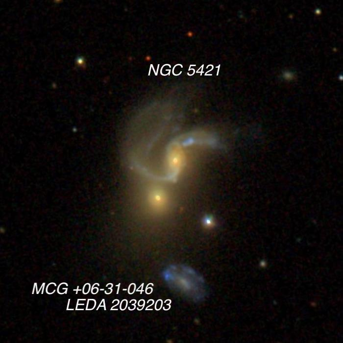
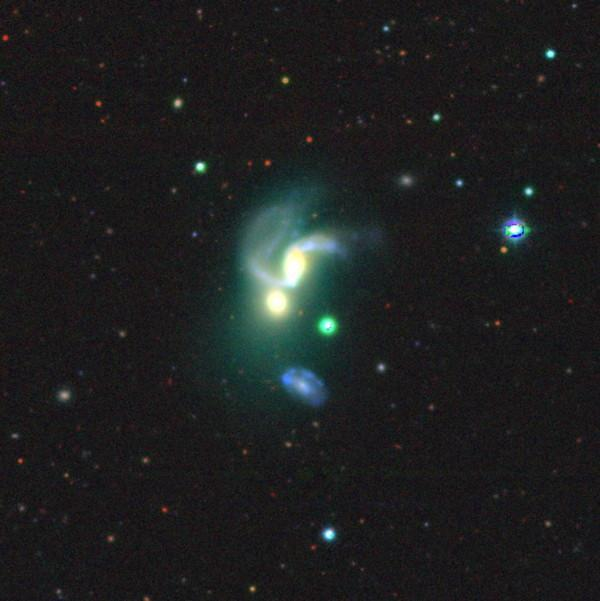

NGC 5421 = Arp 111
- Name: NGC 5421 = Arp 111 = VV 120 = I Zw 78
- RA: 14h 01m 41.4s
- Dec: +33° 49' 35" (2000)
- Constellation: Canes Venatici
- Type: SBc? + E
- Size: 1.3'x0.9'
- Magnitudes: 13.4V, 14.2B
- Surf Br: 13.4 mag/arcmin²
This fascinating interacting system caught the eye of Halton Arp (Arp 111), Boris Vorontov-Vel'yaminov (VV 120) and Fritz Zwicky (I Zw 78). It was first discovered visually by French astronomer Édouard Stephan exactly 150 years ago with the 31" silvered-glass reflector of the Marseilles Observatory. Although Stephan only recorded a single object, his published description reads "Faint, rounded, irregular, 2 very faint stars involved." There is a 15th magnitude star close southwest but the other stellar object is mostly likely the southern elliptical of the main pair!

Arp's classification doesn't make much physical sense -- "E and E-like galaxies repelling spiral arms"; "E galaxy apparently bending arm at root" and Vorontsov-Vel'yaminov interpreted it as a quintet (including the blue galaxy to the south). Zwicky considered it a "blue post-eruptive pair of open Sc and spherical compact in matrix". Of course, all of their descriptions/classifications were purely based on the photographic appearance and their own (sometimes unique) physical interpretations. Surprisingly, there hasn't been much research on NGC 5421, other than being included in many standard surveys (redshift, etc.).
My first observation was back in 2001 using a 17.5" and I was confused by the structure -- I noted an irregular shape and a diameter of roughly 1'. It almost seemed like a partially resolved faint cluster with a 15th mag star just off the southwest side as well as a faint "star" attached to the southeast end. In addition, at moments a stellar nucleus further confused the observation. As it turns out, the "star" at the southeast end is VV 120c, a compact elliptical companion.
In 2013 I had a much better view in my 24" and called it "moderately bright, fairly small, elongated 3:2 NNW-SSE but irregular. Contains a very small, bright nucleus." At 322x, the companion at the southeast edge of the halo was easily resolved and appeared fairly faint, round, just 10" or so in diameter. 17th magnitude MCG +06-31-046 is just 1' S of center and was glimpsed several times and confirmed at 322x.
I took more extensive notes in Jimi's 48" in May 2019:
"This striking interacting pair consists of a tidally disrupted spiral on the north side and a compact elliptical or lenticular on the south side, separated by 20" between centers. At 613x, the central core region or bar of the spiral appeared bright, fairly small, elongated ~2:1 N-S, ~0.3'x0.15', with a very bright nucleus. A faint spiral arm was easily seen attached at the north end and extending directly west, making an angle of perhaps 110° with the central region. This arm spread out a bit as it faded at its west tip. The southern spiral arm, which extends east, was seen as a dim glow but lacked a distinct edge and merged into the low surface brightness halo on the east side. The southern component (VV 120c) appeared fairly bright, fairly small, round, 0.3' diameter, and a small bright nucleus. MCG +06-31-046, a third component of this system, is situated 1' S and appears faint, fairly small, slightly elongated SW-NE, 20"x15", low even surface brightness. A mag 15 star is 0.5' NNW.

At some point I ran across the nickname "Flying Ant" galaxy, but I can't find a reference. Any ideas?
As always,
"Give it a go and let us know!
Good luck and great viewing!"
Steve's follow-up — May 17th, 2021, 10:35 PM
NED identifies MCG +06-31-046 with the separate blue galaxy to the south (VV 120d/120e) and the MCG dimensions (0.4'x0.25') seems to support that identification. That's how I labeled the SDSS image, but I know that LEDA picks the SSE galaxy (VV 120c) as MCG +06-31-046. These kinds of discrepancies are not uncommon, mainly caused by imprecise MCG coordinates.